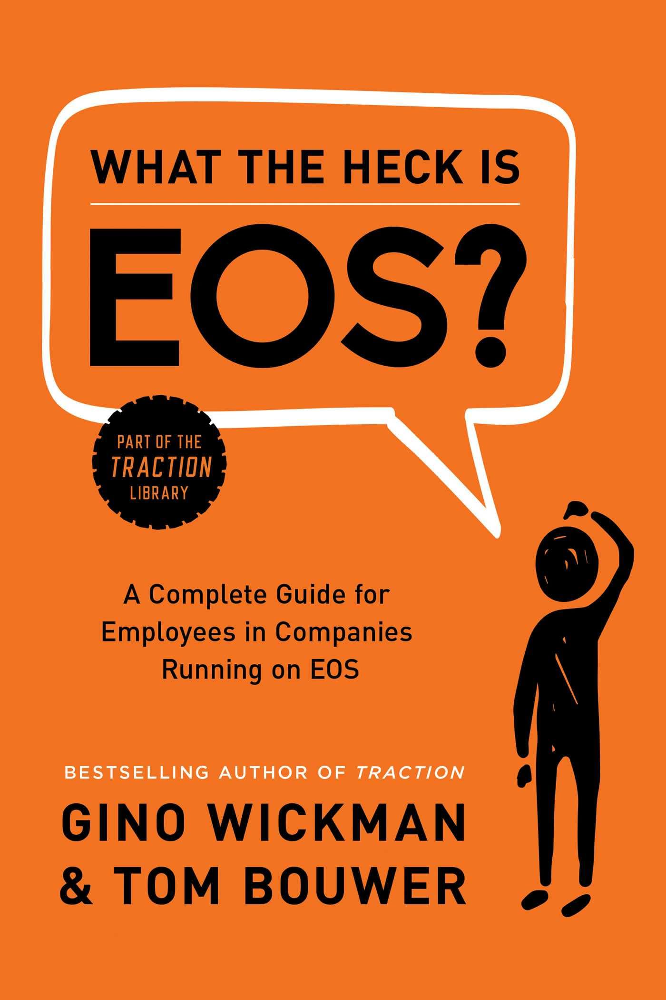

When a company adopts EOS, the leadership team typically spends months learning the system — reading Traction, working with an Implementer, attending quarterly sessions. Their team members, meanwhile, suddenly find themselves in Level 10 Meetings, being asked about their Rocks, or discovering their role has changed because of something called an Accountability Chart. Nobody explained it to them. That gap is what this book fills.
Wickman and Bouwer — who is himself an EOS employee, not a leader — take every core EOS concept and translate it from the implementation language of Traction into the lived experience of an employee. What is the V/TO and why does it matter to me? What does my Scorecard number actually mean? What am I supposed to do in an IDS session? Why did my company reorganise around an Accountability Chart instead of an org chart? This book answers all of it, plainly and with a consistent "what's in it for you" orientation.
The result is a book that operates as both an onboarding tool and a confidence builder. Employees who read it understand not just the mechanics of EOS but the logic beneath them — why the system is designed the way it is, and how participating fully in it makes their own working life better, not just the company's bottom line. The book's consistent message is that EOS isn't something being done to employees — it is something they are invited to participate in and benefit from, if they understand it well enough to engage.
Everyone in the organisation sees the same destination — Core Values, Core Focus, 10-Year Target, 3-Year Picture, 1-Year Plan, and Quarterly Rocks
Right people in right seats — the GWC test (Get it, Want it, Capacity to do it) and the Accountability Chart that makes every role explicit
A Scorecard of weekly activity-level leading indicators — removing subjective judgement and giving everyone a clear, honest pulse on performance
A structured list of obstacles and opportunities, resolved through IDS (Identify, Discuss, Solve) — turning problems into actions in every meeting
Core processes documented and Followed By All — consistent execution that doesn't depend on a specific person's knowledge or availability
Rocks (90-day priorities) and the Meeting Pulse (Level 10 Meetings) — the execution engine that keeps strategy connected to daily work
State the real issue — not the symptom. What is the actual root cause slowing you down?
Give it airtime. Get all perspectives on the table with the right people. No hidden agendas.
Reach a concrete decision: a to-do, a Rock, a policy. Someone owns it, with a due date.
90-minute fixed agenda: Scorecard review, Rock check, customer/employee headlines, to-do review, IDS. Designed to surface and solve issues fast.
Leadership team steps back to review the quarter, close old Rocks, set new Rocks, and solve the highest-priority issues for the next 90 days.
Full V/TO review — update the 3-Year Picture, set the 1-Year Plan, align on one-year priorities and the Rocks that make the year plan real.
A focused session between two people with unresolved tension or misalignment — a tool for clearing the air before small issues become cultural problems.
A two-page document that captures the entirety of the company's vision and how it will be executed. It includes Core Values, Core Focus (Purpose and Niche), the 10-Year Target, 3-Year Picture, 1-Year Plan, Quarterly Rocks, Issues list, and the Marketing Strategy. For employees, the most important sections are the Core Values (the behavioural standards) and the 1-Year Plan and Rocks (what the company is actually trying to accomplish right now). When you understand the V/TO, your daily priorities become calibrated to something real.
The EOS replacement for the traditional org chart. Rather than showing reporting lines and headcounts, the AC shows seats — and each seat has clearly defined accountabilities (what specific functions belong there). Every employee has a seat, and every seat has explicit responsibilities. This eliminates the grey zones where work falls through, and replaces the common "I didn't know that was my job" with a clear, agreed answer. The AC also reveals who owns each function across the whole organisation, which is essential context for understanding who to involve in any given issue or decision.
A Rock is a 90-day priority — a specific, meaningful, completable commitment that represents one of the three to five most important things a person or team will accomplish this quarter. The name comes from the prioritisation metaphor: if you fill a jar with big rocks first, you can still fit gravel, sand, and water around them. If you start with the small stuff, the big rocks never fit. Setting good Rocks requires discipline: they must be specific ("Hire two support reps by October 31" rather than "improve staffing"), achievable in 90 days, and genuinely among the most important priorities — not a list of everything you're already doing.
A weekly one-page report of 5–15 activity-level metrics — leading indicators, not lagging results. Each number has an owner and a weekly target (green or red). The Scorecard is reviewed in the Level 10 Meeting every week: anything red goes to the Issues List for IDS. The power of the Scorecard is its timeliness: it shows you whether the machine is working this week, not whether it worked last quarter. For employees, a well-designed Scorecard measurable is a gift — it removes ambiguity about performance and creates a single, shared definition of "on track."
The three-question diagnostic EOS uses to assess whether someone is in the right seat. "Get it" means they truly understand the culture, the role, and how to operate effectively within the company. "Want it" means they are genuinely motivated to do this work — not just tolerating it or going through the motions. "Capacity to do it" means they have the skills, time, knowledge, and energy the role actually requires. A "no" on any one of these three means the person is not in the right seat — which is a solvable problem that EOS surfaces rather than ignores.
EOS isn't something being done to you. It's a system you're being invited to participate in — and the more fully you do, the more you get out of it.
Most employees experience EOS as a series of unexplained changes. New meetings, new vocabulary, new accountability. This book is the explanation they deserved from the start.
Having a number you own every week sounds like surveillance. It is actually the opposite — it is the clearest signal you will ever get about whether you are doing your job well. You don't have to wonder. You know.
The Issues List is only as good as what employees put on it. Raising a real issue is not complaining. It is the highest-value thing you can do in a meeting — surfacing something that is slowing the company down and giving the team the chance to fix it.
The most important idea in this book is also the simplest: EOS doesn't belong exclusively to the leadership team. When a company implements EOS, the leadership team typically gets months of education, coaching, and facilitation — and their employees get an announcement and a new meeting structure. The result is that the people most affected by EOS day-to-day are the ones least equipped to engage with it. This book exists to close that gap, and in doing so it makes a quiet but significant argument about how operating systems should be shared within organisations.
The insight that has the most practical weight is the reframing of employee participation as the limiting factor in EOS effectiveness. A leadership team can implement EOS perfectly — meeting rhythms, quarterly sessions, a clean V/TO, disciplined IDS — and still find that the system doesn't fully deliver its promise if the broader team is passive. The Scorecard measures are gamed or ignored. The Issues List contains only safe, small problems. Rocks are set pro forma and forgotten by week six. The culture that EOS is trying to build — accountability, clarity, honesty about problems — requires every person in the organisation to actually show up to it.
What the Heck Is EOS? argues, gently but clearly, that the way to get employees to show up is to explain the system honestly: here is what it is, here is why it works, here is what it asks of you, and here is what you get back. That kind of transparency about a management system is rarer than it should be. Most companies introduce EOS with the assumption that the benefits will be self-evident once employees experience them. This book suggests a different assumption: employees deserve to understand the system they're participating in before they're expected to believe in it. That understanding — more than any single tool or meeting or Rock — is what turns EOS from a leadership project into a company culture.
What the Heck Is EOS? is a short, clear, and overdue addition to the Traction library. Every company that has adopted EOS and given employees Level 10 Meetings without giving them this book first has made an avoidable mistake. The gap between what leadership understands about EOS and what the broader team understands is the single biggest implementation failure mode — and this book is the antidote.
The co-authorship of Tom Bouwer — who navigated EOS as an employee rather than a leader — gives the book its most valuable quality: the consistent, honest "what does this mean for me?" perspective that Traction, for all its brilliance, cannot provide. Where Traction teaches leaders to design the system, this book teaches employees to live inside it well. Both perspectives are necessary. Together, the two books give an EOS company its full operating manual — one for the cockpit, one for the crew.
The limitations are real: this is a primer, not a deep reference, and its optimistic framing does not account for imperfect implementations. But those limitations are inherent to the book's purpose. It is not trying to be comprehensive. It is trying to close the information gap between leaders who understand EOS and employees who don't — and at that goal, it succeeds cleanly. If you work in an EOS company, this is not optional reading. It is the context that makes everything else make sense.